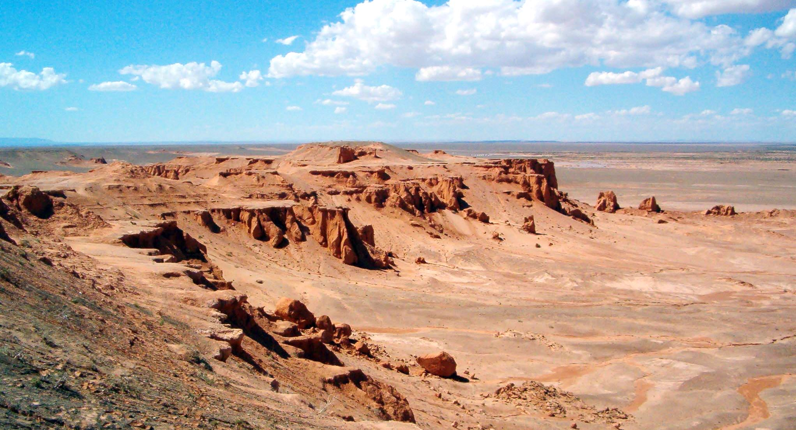

Deșertul Sahara, o istorie acoperită de mult nisip - Tinerama
 Close Acasa Contact Politica datelor personale Facebook Hai in grup! Cultură Generală Descopera Istorie Istorie uitată Mistere Profetii Spiritualitate Close Skip to content Cultură Generală Descopera Istorie Istorie uitată Mistere Profetii Spiritualitate
Tinerama
Universul Cunoașterii
Acasa Contact Politica datelor personale Facebook Hai in grup! Open Search Aici Menu Posted in IstorieDeșertul Sahara, o istorie acoperită de mult nisip
by TiberiuM 21/06/2020 21/06/2020Share?
Dă clic pentru a partaja pe Twitter(Se deschide în fereastră nouă) Dă clic pentru a partaja pe Facebook(Se deschide în fereastră nouă)Deșerul Sahara este una dintre cele mai misterioase și fascinante zone de pe Terra. Specialiștii susțin că ascunde numeroase dintre secretele planetei nostre, o adevărată istorie uitată sau necunoscută, acoperită de dunele de nisip.
Deșertul Sahara, un loc aparte
Sahara Occidentală este controlată de două state diferite: Marocul deține aproximativ 75% din teritoriul Saharei de Vest , inclusiv partea de coasta. Cu toate acestea, 25% din Vestul Saharei este controlată de Republica Democratică Arabă Sahrawi; un stat parțial recunoscut la nivel mondial, care susține teritoriul ne-autonom al Saharei de Vest, dar controlează numai cea mai estică o cincime din acest teritoriu.
Înainte de 1991, aceste două guverne se aflau în război. Din acest motiv a fost practic imposibil ca această zonă să fie explorată și descoperită.
Deșertul Sahara format cu ajutorul oamenilor
Până în prezent, mediul științific atribuia formarea deșertului Sahara modificării axei Pământului. Această teorie devine una învechită și scoasă din circulație, pentru că o echipă de geologi a reușit să descopere adevăratul motiv pentru care Sahara s-a transformat în cel mai mare deșert de pe Terra.
Un studiu, publicat în revista de specialitate Frontiers in Earth Science, realizat de arheologul David Wright de la Universitatea Națională din Seul, susține că oamenii au jucat un rol important în ceea ce este Sahara în prezent.
Nu modificarea axei de rotație a Terrei este cea care a influențat ca Sahara să se deșertifice, ci oamenii care în urmă cu mii de ani au descoperit agricultura. Potrivit studiului, totul a început în urmă cu 8000 de ani, când comunitățile neolitice din Africa au început să experimenteze agricultura pastorală din apropierea râului Nil.
Această tehnică s-a răspândit rapid în diverse comunități mai mare, care au introdus un număr foarte mare de animale în pășunea Sahara.
Odată ce vegetația era îndepărtată rapid, solul a rămas fără protecție în fața razelor puternice ale Soarelui. În acest fel, cantitatea de căldură transferată spre sol a crescut exponențial cu numărul foarte mare de animale care mâncau vegetația și solul a suferit transformări masive într-o perioadă de câteva sute de ani.
Potrivit experților, acest lucru a determinat o reducere a precipitațiilor, ceea ce a creat un cerc vicios. Sahara începea să se transforme într-un deșert imens și nimic nu putea opri acest proces.
Studiul se bazează pe numeroase cercetări realizate de Wright, dar chiar și așa există multe întrebări la care încă nu se poate răspunde. Cu toate acestea, această teorie pare să fie acceptată de oamenii de știință și n contextul actual pare cea mai potrivită pentru explicarea formării unei imensități deșertice, pe care o numim Sahara.
Ochiul Saharei
Ochiul Saharei este o formațiune misterioasă, din mijlocul deșertului, care poartă același nume. Formațiunea ridică numeroase semne de întrebare în rândul oamenilor de știință cu privire la originea și scopul său.
În cadrul misiunii spațiale Gemini IV din anul 1965, care a durat patru zile pe orbita Pământului, astronauții au fotografiat diferite zone ale Terrei. Atunci a fost descoperită o structură care a fost numită Ochiul Saharei. Structura are un diametru de peste 50 de kilometri, o vechime de 100 milioane de ani și se află în deșertul Sahara, în apropiere de Mauritania.
Structura este formată din cercuri suprapuse cu zeci de kilometri diametru. La început s-a emis ipoteza că structura s-a format ca urmare a unui impact cu un meteorit. După anul 2000, cercetătorii au afirmat că în zonă se produce o formă rară de vulcanism care datează din perioada cretacică.
Surprinzător este faptul că structura este formată din cercuri suprapuse, concentrice, ca și cum o forță misterioasă le-ar fi desenat cu o mare precizie.
Cum s-a format Ochiul Saharei?
Teoriile actuale sugerează că această formațiune geologică incredibilă s-a format într-un mod mult mai complicat. Se pare că structura inelului principal al Ochiului Saharei reprezintă rămășița erodată a ceea ce a fost odată cupola unor straturi ale scoarței terestre.
Chiar dacă nu există o explicație oficială pentru Ochiul Saharei, doi geologi canadieni au propus o teorie fascinantă. Aceștia susțin că ochiul a început să se formeze în urmă cu peste 100 de milioane de ani. S-a născut atunci când supercontinentul Pangeea s-a ruptm iar actualele continente Africa și America de Sud au început să se îndepărteze.
În urma acestui procedeu natural, roca topită a început să iasă la suprafață și astfel s-au format cercurile structurii. Roca topită a dizolvat, de asemenea, calcarul în apropiere de centrul Ochiului Saharei, care s-a prăbușit formând un tip special de rocă numită rocă brecie. Această explicație este doar o ipoteză, care nu a fost niciodată acceptată pe deplin.
Desene rupestre
În anul 1933, în deșertul Sahara au fost descoperite primele desene rupestre care au suscitat un mare interes în rândul specialiștilor. Desenele prezentau personaje gigantice cu capul perfect rotund. Mii de astfel de desene au fost descoperite. Vechimea acestor desene este estimată la peste 10000 de ani și au fost realizate de o civilizație despre care lumea modernă nu cunoaște multe lucruri.
Cu siguranță, cu mii de ani în urmă, a existat cel puțin o civilizație care odată cu apariția deșertului a dispărut. După anii 70, cu ajutorul sateliților, au fost descoperite peste o sută de fortărețe despre care se spune că au fost construite de garamanți, o civilizație considerată de specialiști ca fiind sofisticată.
Ca și mayașii, garamanții au constituit o civilizație care comportă multe mistere. Nu se cunoaște originea lor și nici modul în care a dispărut. Mulți specialiști au făcut legătura între această civilizație și cea a atlanților. Rămâne ca viitorul să ne lămurească asupra acestor ipoteze.
Stucturi enigmatice din piatră
Structurile enigmatice variază în funcție de mărime și formă și, datorită diferențelor lor, experții încă nu au reușit să decidă exact pentru ce au fost folosite, nici când au fost create cu exactitate.
Raportul despre aceste structuri a fost publicat în cartea „Arheologia Saharei de Vest: o sinteză a lucrărilor pe teren, 2002-2009″ (Oxbow Books, 2018).
După cum au relatat experții, arheologii au explorat părți din Sahara Occidentală între 2002 și 2009, unde au excavat o mică zonă controlată de Republica Democratică Arabă Sahrawi.
„Datorită istoricului conflictului, cercetările detaliate arheologice și paleoenvironmentale din Sahara Occidentală au fost extrem de limitate”, a explicat Joanne Clarke, lector senior la Universitatea East Anglia, și Nick Brooks, cercetător independent.
După cum explică experții, structurile sahariene par a fi proiectate în mai multe moduri, clasându-se de la structuri de piatră în formă de semilună până la structuri circulare precum și linii drepte.
Curios, unele structuri sunt o combinație de forme diferite.
Așa cum au remarcat oamenii de știință în carte, o structură specială este făcută dintr-un amestec de linii drepte, cercuri de piatră, precum și o platformă și o grămadă de roci care are peste 2000 de metri lungime.
Scopul exact al structurilor enigmatice rămâne un mister, deși teoriile sugerează că unele dintre structuri pot marca locul mormintelor.
Recomandate
Tagged: Deșertul Sahara , ochiul saharei , sahara , structuri megaliticeTiberiuM
A-ți cunoaște neștiința este partea cea mai bună a cunoașterii!
More by TiberiuMAutori
TiberiuM Ce IQ au avut cei mai inteligenți oameni din istorie? Cum înțeleg câinii limbajul uman? Ce nu știm încă despre materia întunecată? Care este adevărul despre moartea lui Richard Inimă de Leu Ana Popescu De ce părinții au tendința de a-și controla copiii? De ce întâlnim în viață anumite persoane? De ce există atâtea conspirații în jurul atentatelor din 11 septembrie 2001? Când nu trebuie să dai bacșiș chelnerului?Cele mai bune articole
Jules Verne, scriitorul care a ascuns viitorul în operele sale Mesaje de la îngeri! Ce înseamnă numerele: 11, 22, 33, 44, 55, 66, 77, 88 sau 99 Semnificația orelor, află dacă te iubește sau te înseală Ce înseamnă când visezi o persoană moartă? Cum se face coniacul în casă. Rețetă veche de sute de ani Confidențialitate și cookie-uri: acest sit folosește cookie-uri. Dacă continui să folosești acest sit web, ești de acord cu utilizarea lor.Pentru a afla mai multe, inclusiv cum să controlezi cookie-urile, uită-te aici: Politică cookie-uri © 2020 Toate drepturile rezervate - Tinerama.ro - Preluarea articolelor se poate face in limita a 250 de caractere cu linkul spre pagina sursa.. Proudly powered by Newspack by Automattic Politica de utilizare a datelor personale